Technology Used
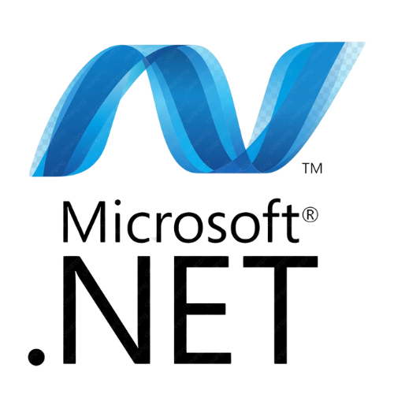
Microsoft .NET
Microsoft Azure Database Server
Github
Why I chose this project
In my first year of I.T., we were required to take a course named 'Managing Technical Teams' which teaches you how to navigate with the different dynamic possibilities and communication styles to get work done in an organization alongside a quarter project. This was our third big project of the year, and I had developed a certain standard for how I wanted to make my project and what kind of peers I wanted to work with. I was open to any idea as long as the project resulted in a stretch of capabilities and knowledge that we wouldn't have been given in a regular course.
Choosing a client
When tasked with finding a client for this project, one of our teammates proposed working with an organization that she had volunteer experience with.
The Green River Coalition is a nature conservation initiative dedicated to protecting and restoring nature sites surrounding the Green River watershed. Our team reached out, and after a few email exchanges and a live Zoom call, we confirmed their interest. The organization was seeking a better way to manage restoration site data, volunteer participation, and resource use for basic productivity improvement and grant writing processes, which gave us a clear direction and scope for our project.
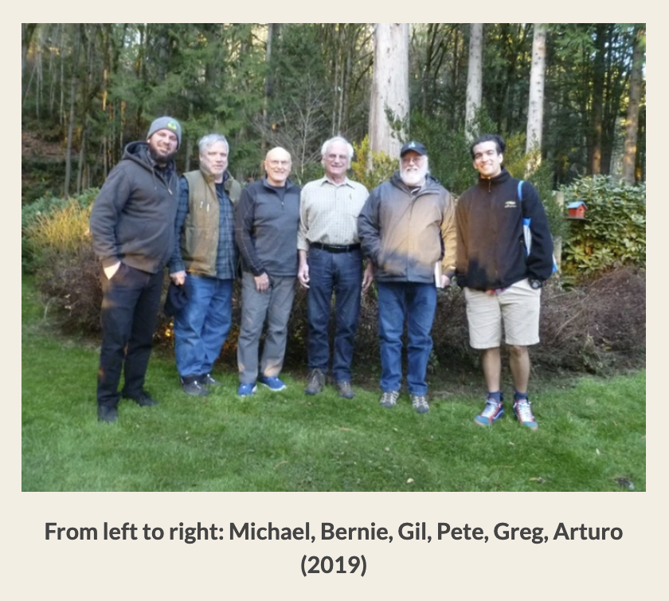
Problem Statement
How can a nonprofit organization better track and communicate environmental restoration progress across multiple sites while ensuring volunteer efforts are properly documented for grant writing and shareholder understanding?
The Green River Coalition faced ongoing difficulties in managing site restoration data. Field staff often used excel sheets, OneDrive documents and folders or an honor system to document progress—making it difficult to analyze trends or report to stakeholders. Additionally, data about volunteer contributions and site-specific updates were being lost or buried in inconsistent documentation.
Our team set out to build a centralized, digital journal platform that could hit all the needs of the organization. We needed to understand not only what kinds of information were being gathered in the field, but how it was being shared and used downstream by different roles.
My focus involved translating real-world workflows like documenting site activities, tracking volunteer hours, and entering plant data into user-friendly digital forms while ensuring data could be securely stored, searched, and used in end-of-quarter reporting.
User Research
Our team conducted two stakeholder interviews with Greg and Mike from the Green River Coalition to understand the day-to-day challenges of restoration site management and documentation. Both individuals were heavily involved in coordinating volunteers, organizing field notes, and reporting site activity to funders.
We discovered that much of their data was scattered across excel sheet notes, folders, and communication channels. It was difficult to track consistent progress across different sites, compile volunteer hours, or generate reports that demonstrated impact over time. Additionally, some volunteers weren’t logging their work data in a consistent manner because there was no centralized, easy-to-use system to do so.
These insights shaped our core design decisions. We prioritized a dashboard for quick site summaries, a form system for volunteers to log hours and notes, and the ability to upload images tied to specific site visits. While our research was limited to two interviews, it laid the foundation for a tool that directly addressed the Coalition’s real operational pain points.
Ideation & Design Evolution
Throughout development, we explored both PowerApps and .NET to determine the most practical approach for building our journal application. Although the platforms were different, the planning process remained consistent: identifying required database tables, defining UI structure, mapping user roles, and discussing necessary workflows.
Each version involved the same core steps: outlining site-to-site data requirements, structuring volunteer and staff permissions, and designing a clear, intuitive interface for input and reporting. These early ideation steps helped us stay aligned with real-world needs while iterating on technical feasibility.
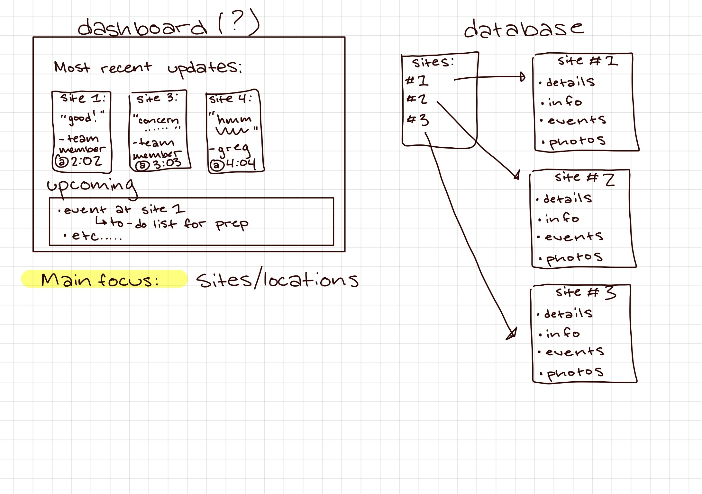


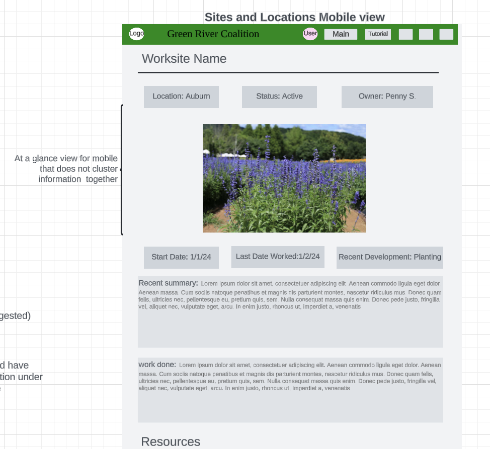
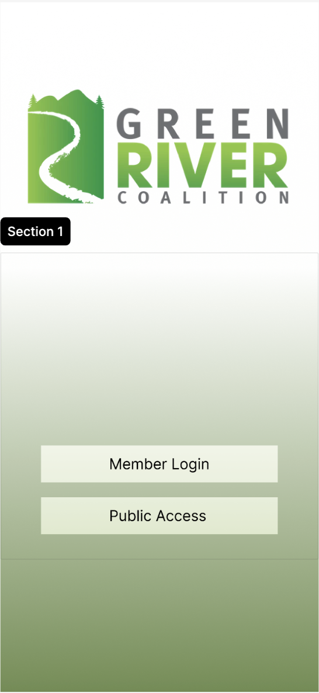
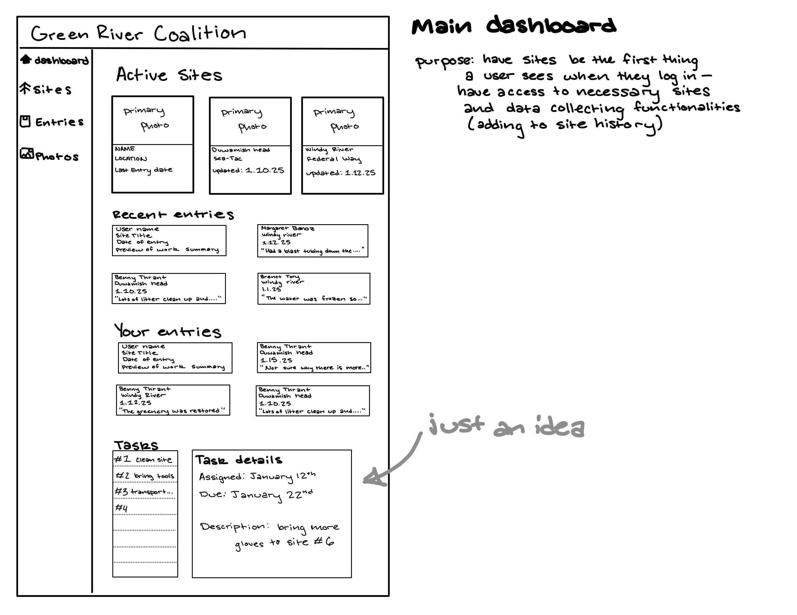
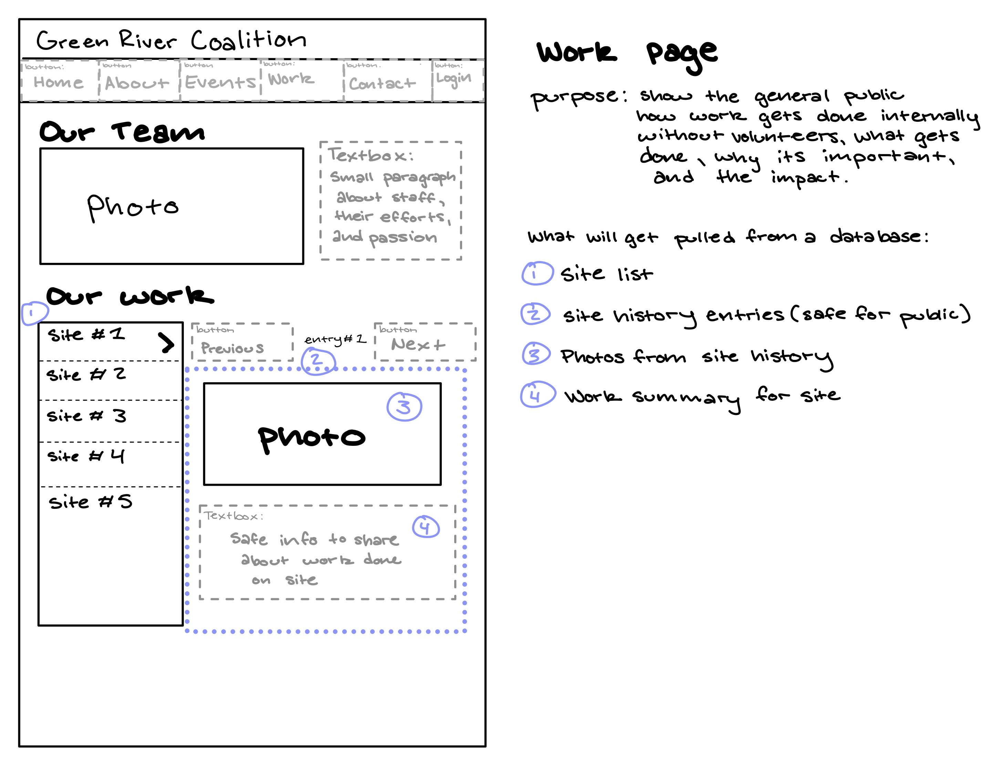
Project Challenges
The first version of the application was built collaboratively with input from Greg and Mike at the Green River Coalition. Their feedback helped shape the design and data structure in PowerApps. However, the second version built in .NET was developed without direct client involvement due to time and availability constraints.
This shift introduced new challenges. Without real-time feedback, we were able to guide our own priorities and navigation patterns based on our earlier notes. Additionally, translating certain PowerApps features into a .NET environment came with unexpected complexity, especially when aligning backend tables with front-end form logic.
Despite these hurdles, we focused on building a scalable and maintainable foundation. While the final version will benefit from future user testing, we made sure it reflected the original goals discussed with the client and included extensible components for future updates.
Azure Database Server
- Connection string mismatches
- Manual data formatting errors
- Understanding cost and affordability
.NET Development
- Connecting application to database server
- Linking back end to front end
- Debugging and testing
GitHub Workflow
- Sync issues across machines
- Merge conflicts between versions
- Not having enough knowledge about Github in general
Troubleshooting
- UI issues from backend errors
- Cross-browser bugs
- Multi-user testing limitations
Project Completion
The second version of the application, built in .NET, provides Green River Coalition with a flexible and maintainable site documentation tool. The dashboard allows staff to easily track restoration efforts, volunteer activity, and entry status across multiple sites.
- Dashboard with site cards, latest updates, and entry summaries
- Resource selection tracking
- Login authentication
- Database table matching to site records
Below are selected screenshots of the completed application, highlighting key functionality and the final visual structure.
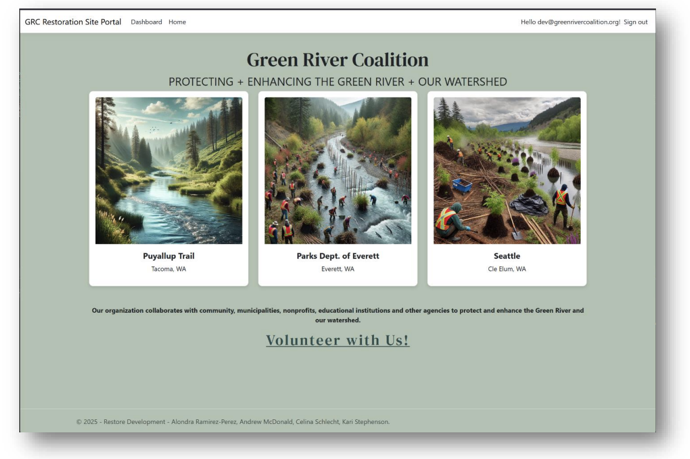
Landing Page
Dashboard
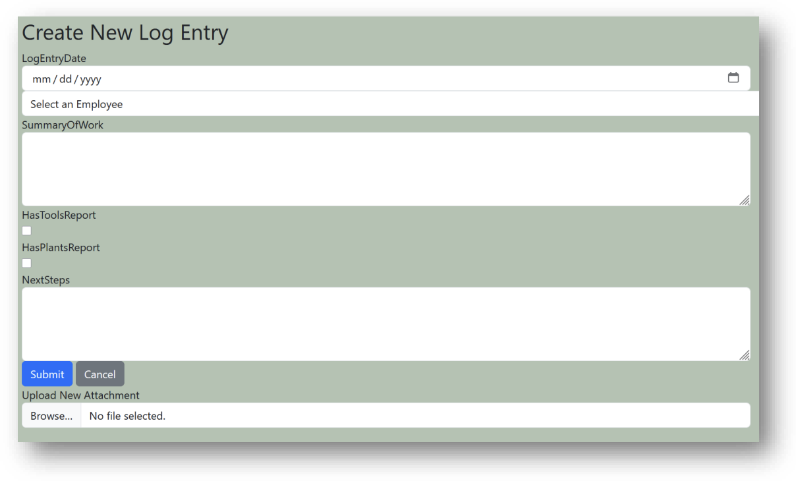
Work log creation UI
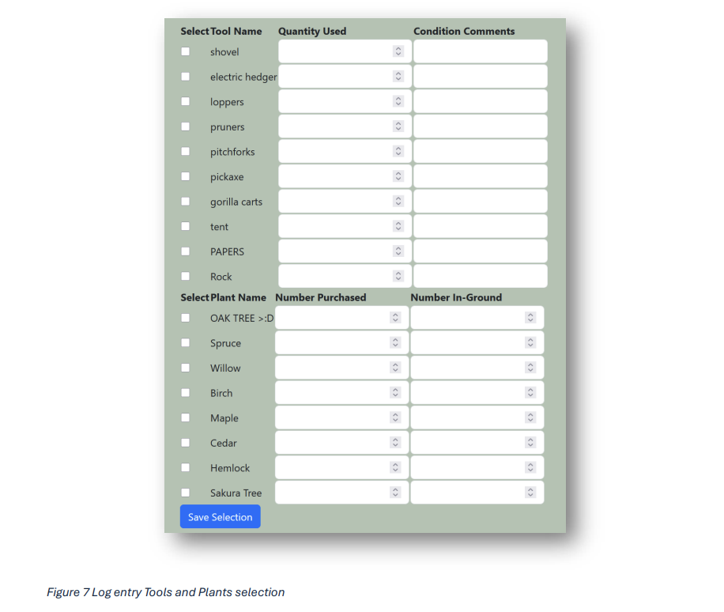
Resource selection screen
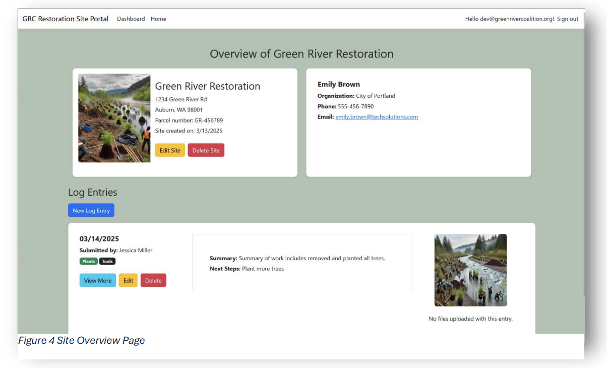
Site overview page
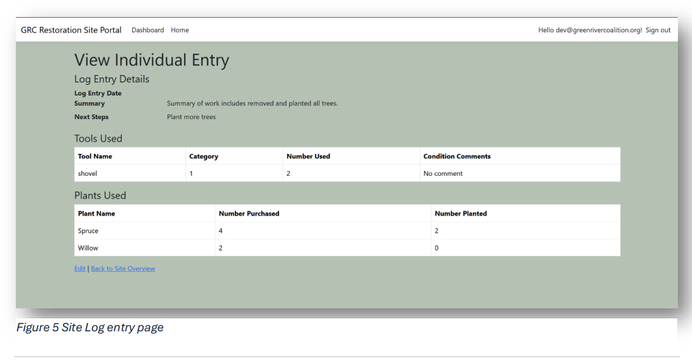
Log entry view after submission
Reflection
One of the most rewarding parts of this project was the team I got to work with. We all brought strong work ethics and a genuine interest in the problem we were solving, which made the collaboration feel natural and motivating. I built meaningful connections with each teammate both inside and outside the classroom, and that bond made it easier to trust the feedback I received. It also gave me the space to reflect on my own communication style and how I thrive in a team setting where mutual respect and accountability are shared. I came away from this project not only with technical and design skills, but also with a clearer sense of how I contribute to and grow from supportive, well-aligned teams.
In a more technical sense, I stumbled alot with github and coding a project that used multiple languages and connections. Even though we learned about these topics in classes
the hands on learning portion of this project really gave way more insight that will be valuable for future career prospects. Due to the
freedom we had in our second iteration of the project, we were able to make our own path with our imaginative and innovative ideas. I genuinely could not have asked for a better team to make this project with!
What I Learned
This project was a turning point for me in terms of both confidence and collaboration. It challenged me to grow technically and personally, and helped me better understand what makes a team environment supportive and effective. Here are a few things I took away from the experience:
- Don’t be afraid to work with tools you haven’t mastered yet because learning on the fly is part of the process.
- Only bite off what you can realistically chew within the project timeline.
- GitHub is powerful, but collaboration requires patience, version control awareness, and good habits.
- Make intentional space for troubleshooting. Fixes take time, and rushing only makes things messier.
- Good team chemistry makes all the difference. Trust makes feedback easier to receive and apply.